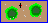

| Understanding the Impact of Predators through Hands-on Experiments |
 <= Click here to start the population model program Now that we have a good understanding of how a squirrel population can grow undisturbed, albeit limited by food, we'll add the new species, the red-tail hawk. This will make the population model more interesting and help you gain an understanding of the impact that a predator can have on its prey population.
This model assumes that each red-tail hawk eats, if not entirely, three squirrels per year and that eating these three squirrels is essential for its survival. In real nature the hawk's dependency on squirrels is very different. Make sure to check the Facts about Red-tailed Hawks page for the details.
-- Hawks' life expectancy
We will start with a simple experiment to figure out how many years a hawk normally lives.
Figure out the life expectancy of the red-tail hawks. As with the squirrels, you might have no idea of what the life expectancy is for the hawks, but come up with as good a guess as you can. The experiment to figure out the answer is very similar to the one used to find out the squirrels' life expectancy, so define a similar experiment. -- The impact of Predators over Prey
We finally reach the point where we have two different populations and we'll use the model to analyze the inter-dependence of both.
In the previous experiment, a single hawk was introduced, and it had no impact whatsoever on the squirrel population. The first experiment is to try to figure out how many hawks it takes to affect the squirrel population. If you think about it, the answer is pretty straightforward. Try to come up with your own hypothesis. Set up an experiment to prove or disprove your hypothesis. COMMENT: Predators need to have a wide range of prey. They destroy large numbers of prey quickly and thus their spectacular successes are often noticed. They are more likely to show an immediate impact. However, because they are mobile and move away after they have fed, the effects of many predators are often overlooked.
-- Population Balance
As a final experiment, let's try to find out from the model if it is possible to achieve a stable balance for both the squirrel and the hawk population. Can they co-exist peacefully? Not sure that the squirrels would call it "peacefully", but at least they get to survive and continue to reproduce over time.
Is there a combination of the number of squirrels and hawks, as well as the times when they get introduced, that will yield a stable population balance of both species? Based on all you've done and read throughout this lesson, what would be your expectations? What is your hypothesis? Set up an experiment to prove or disprove your hypothesis. Try different combinations and come up with your own conclusions.
HINTS: The model makes two assumptions. Taking these hints into account will help you come up with the correct answer.
(1) If the ratio of hawks to squirrels when you introduce the hawks is high, the hawks are more aggressive and each will go after more squirrels.
(2) Right after you introduce the squirrels, they are all young and inexperienced. If you were to introduce the hawks at that point, the squirrels are what is called and "easy prey". The more time you wait before introducing the hawks, the more mature and experienced the squirrels become. Their chance of survival improves.COMMENT: If you found a combination that yields a stable population balance, run it several times and observe what happens. Observe the ratio of the number of squirrels to hawks. Observe how both population sizes vary over time. Observe how long the populations remain stable.
One of the combinations that achieves a population balance requires 60 oak trees and the following setup:
Squirrels Hawks Quantity Introduction year Quantity Introduction year 4 30 2 80 After running the model with this setup, you'll see that indeed there will be stable population numbers for both squirrels and hawks. The numbers will stabilize at about 45 squirrels and 15 hawks, which gives you a ratio of 45/15 or 3 to 1 squirrels per hawk.
Based on the results of experiment number 5 and on the way both populations are modeled by this program, how many hawks can a single oak tree sustain? Since one oak tree can sustain about three squirrels and the ratio of squirrels to hawks is 3 to 1, we can conclude that one full grown oak tree can sustain one and only one hawk. This is really not the same in nature so make sure to check the Facts about Red-tailed Hawks page.
Does this ratio make sense? When the predator-prey relationship is tied together very closely, it makes sense that there is a fairly stable ratio between the numbers of the two populations. As soon as the squirrel population increases, the hawk population, which in this case depends on squirrels for survival, follows suit. The opposite is also true: when the squirrel population goes down, so does the hawk population. In general, a somewhat stable ratio will be maintained.
Will the stability last forever? If you run the model several times, you'll see that the magic balance will not always work. There will be runs when something happens, the balance breaks, and either both populations dwindle down until they both disappear or only the hawk population disappears.
Can you come up with plausible explanations of how this can happen? I.e., what can cause the fine balance between the two populations to end? There can be many reasons. Perhaps one year more squirrels die than in a normal year because of some infection that affects squirrels or because of weather conditions that are too rough for the squirrels. Another reason could be that one year the hawks have more offspring than in normal years and most of them turn to be very aggressive when going after the squirrels. Any such imbalance can after a few years have a severe impact on the size of the populations.
You may have noticed that in many combinations both populations start to decline but somehow the squirrel population is able to recover and go back to normal while the hawks disappear. This could happen in real life if the squirrels are smart, experienced, and aware of the hawks.
To conclude this section, here are a few other combinations that you can use to set up the model and obtain the results shown on the table. Make sure to have enough water and nutrients for optimal growth of the oak trees.
Number of Oak Trees Number of Squirrels and year of Introduction Number of Hawks and year of Introduction Results 40 2 at 30 2 at 60 Either both species disappear or only squirrels survive 40 4 at 22 10 at 50 Either both species disappear or only squirrels survive 40 2 at 30 2 at 90 Stable population balance is achieved 60 4 at 25 2 at 65 Stable population balance is achieved 20 2 at 35 2 at 45 Both species disappear You can try any or all of the previous combinations or try your own. You can also change the birth rates for either of the species and see the effects of that. Experiment!
The next step in the lesson is the final quiz, but you should probably visit the facts pages before that.
Table of ContentsLast Updated:
Arcytech
Java Home
Page
Provide
Feedback